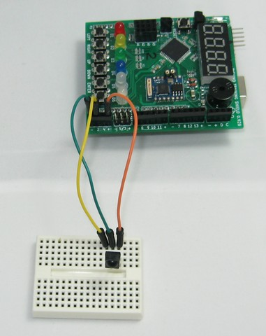

11. Receptor infraroig¶
Llibreria Irremote¶
La llibreria Irremote afegeix a Arduino la capacitat de gestionar tant els emissors com els receptors de control remot d’infrarojos amb els protocols més comuns.
- Descàrrega directa de la llibreria Irremote
- GitHub Pàgina de la llibreria Irremote <https://github.com/shirriff/arduino-irremote> ``
: Ref: `Com afegir una llibreria nova a l'entorn Arduino pas a pas. <Add-library> '
Conexió¶
{kind=link}

Exercicis¶
Compareu i carregueu el programa següent a Arduino.
Un cop carregat, obriu el monitor de la sèrie i canvieu la velocitat de recepció de dades de manera que sigui igual a la velocitat de transmissió del programa.
Premeu diverses tecles del comandament a distància. Els codis de claus apareixeran al monitor de la sèrie i a la pantalla 7 -segment.
1 2 3 4 5 6 7 8 9 10 11 12 13 14 15 16 17 18 19 20 21 22 23 24 25 26 27 28 29 30 31 32 33 34 35 36 37 38 39 40 41 42 43 44 45 46 47 48 49 50 51 52 53 54 55 56 57 58 59 60
/* Lee códigos de un mando a distancia con protocolo NEC desde un receptor de infrarrojos. Envía el código por el puerto de comunicaciones serie. Envía el código a un display de 7 segmentos. */ #include <IRremote.h> #include <Picuino.h> #include <Serial.h> const long SERIAL_BAUD = 19200; // Velocidad del puerto serie en baudios const int RECV_PIN = 2; // Pin de recepción de datos infrarrojos // Inicia un receptor de infrarrojos IRrecv ir_recv(RECV_PIN); decode_results result; // Extrae el código de tecla de del receptor de infrarrojos. int ir_read(void) { int code; // Si se ha recibido un código if (ir_recv.decode(&result)) { // Si el código es de protocolo NEC, devuelve el código if (result.decode_type == NEC) { // Prepara para recibir el siguiente código code = result.value; ir_recv.resume(); return code; } ir_recv.resume(); } return -1; // Devuelve un código de error } // Inicia todos los componentes void setup() { Serial.begin(SERIAL_BAUD); // Inicia las comunicaciones serie ir_recv.enableIRIn(); // Inicia el receptor de infrarrojos pio.begin(); // Inicia el shield Picuino UNO } // Bucle principal void loop() { int code; // Lee el código recibido por el receptor de infrarrojos code = ir_read(); // Si es un código válido, envía el código al puerto serie y al display if (code != -1) { Serial.println(code, HEX); code = (unsigned)code >> 8; pio.dispWrite(code); } delay(50); }
Modifiqueu el programa anterior perquè el LED D1 s’encengui quan es prem el número 1 al control remot.
A continuació, es mostra un exemple de codi incomplet per realitzar la tasca.
1 2 3
// Enciende el led D1 cuando se pulse el número '1' del mando a distancia if (code == ) { pio.ledWrite(1, LED_ON);
Modifiqueu el programa anterior per desactivar tots els LED quan es premeu el botó zero '0'.
Modifiqueu el primer programa per activar i desactivar una columna de LEDs amb els botons "+" i "--" del comandament a distància.
En prémer '+' del comandament a distància, un nou LED de columna s'encendrà. As you prescribe '+' all LEDs will be turned on one by one. En prémer '-' del comandament a distància, l'últim LED s'apagarà. Tal com es pressiona '-' totes les Ledes seran desactivades un per un.
Per programar el codi, cal crear una variable que compti amb el nombre de LEDs que han d’estar en marxa. Aquesta variable s’incrementarà o disminuirà amb els clústers del control. Una instrucció per a cada LED comprovarà si la variable és superior a un valor determinat, s'encendrà el LED. En cas contrari, el LED s’apagarà.
Abans de la `` configuració () ``:
int num_leds; // Declara la variable num_leds como un número entero
Dins del `` bucle () `` `` `` `` `, la variable s'ha d'augmentar i disminuir segons el codi rebut del comandament a distància:
// Si se pulsa '+' aumenta el número de ledes encendidos if (code == ) num_leds = num_leds + 1;
A continuació, els LED s’han d’encendre o desactivar segons el valor de la variable:
// Si se pulsa '+' aumenta el número de ledes encendidos if (num_leds > 0) pio.ledWrite(1, LED_ON); else pio.ledWrite(1, LED_OFF);
Modifica l'exercici anterior de manera que la variable no augmenta més que el nombre total de LED i que no disminueix per sota de zero. S’afegiran dues condicions, una condició limitarà la variable si augmenta massa i una altra condició limitarà la variable si es redueix per sota de zero